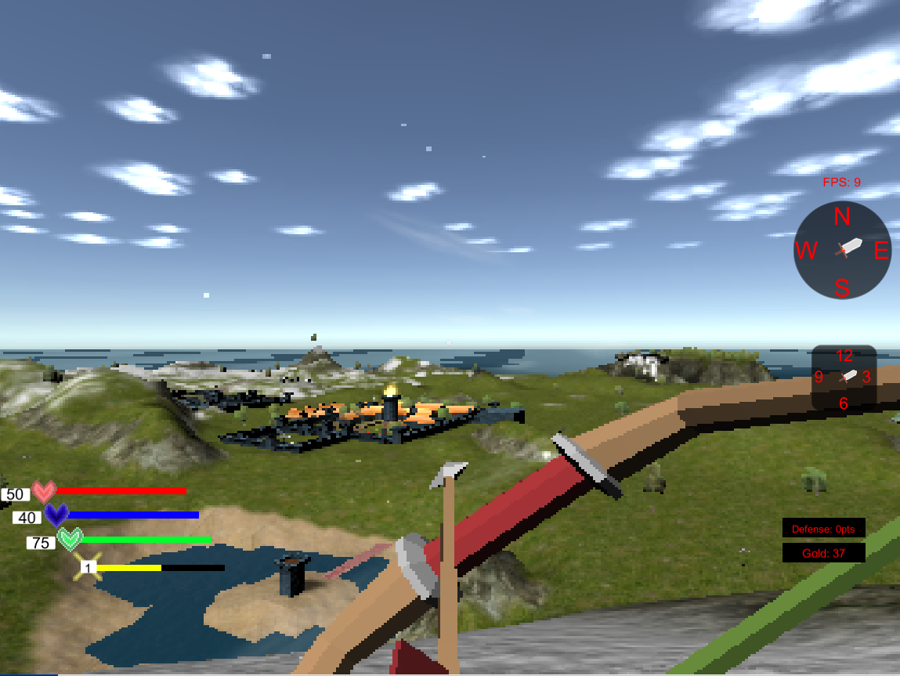
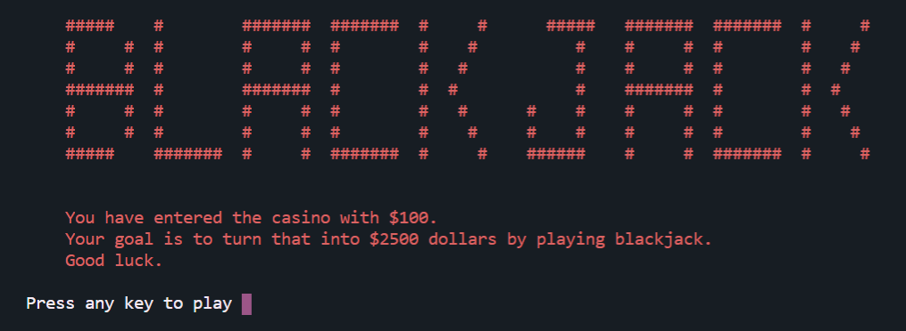
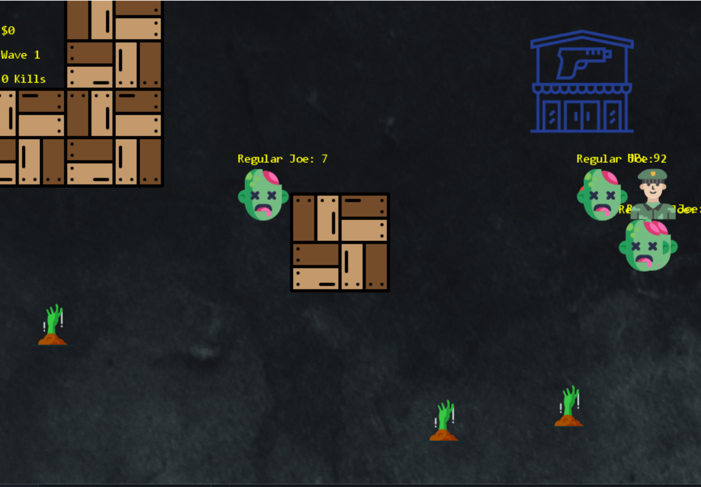
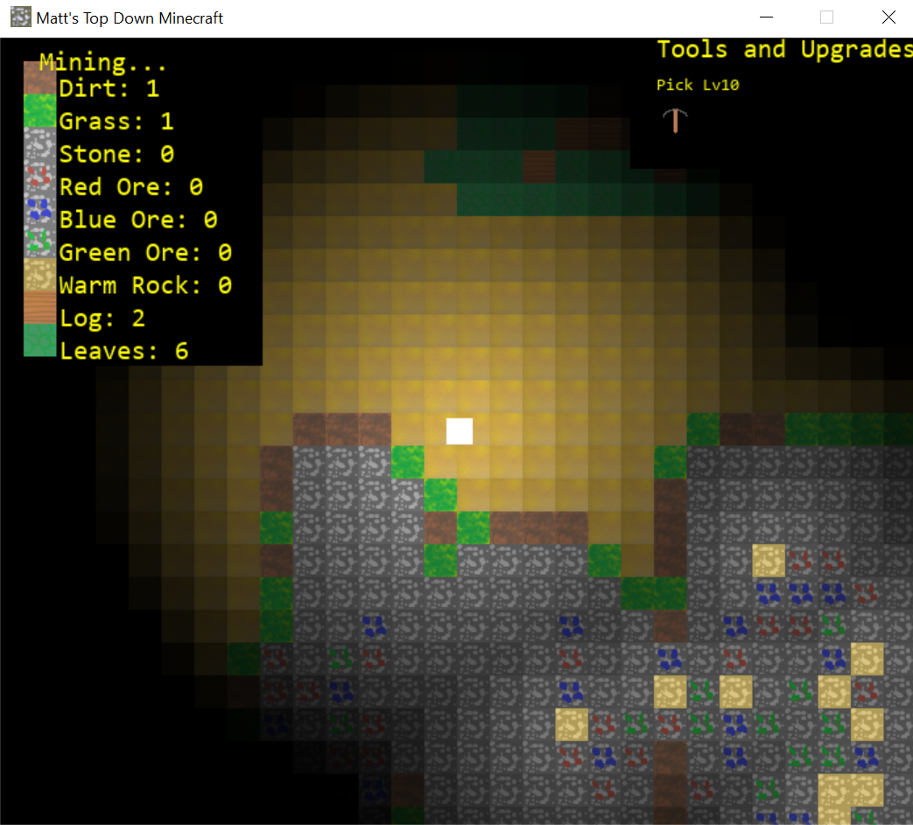
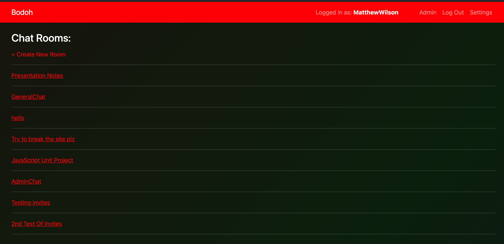

My name is Matthew Wilson. I am a Software Developer, and currently a student at
Base Camp Coding Academy. Game Development has been a long-time passion of mine.
This drive of creating games has led me to software development where I enjoy
solving problems with creative and innovative solutions. My short-term goal is to
employ as a full-time software developer where I hope to be part of a team that has
a similar drive and passion for development.
I currently know the following languages/tools:
{C}
{C#}
{Java}
{Python}
{Django}
{Unity 3D}
{HTML/CSS}
{JavaScript}
My Projects
Stardust Kingdoms: Crying Moon

This is my personal project. The project uses Unity 3D Game Engine,
with C# as the scripting language. Set in Medieval Europe, this fantasy
game revolves around the mystical Amulet of Light, a power treasure that
allows the holder to control the cycle of night and day.
Unit Project 1: Blackjack

This was my first major project at Base Camp. Me and Lathe Ward worked
on this together, wanting to make a fun but simple virtual card game.
The game uses Python to run.
Unit Project 2: Z-Shooter

This was my second major project at Base Camp. Me and Andy Duarte
worked on this together. We aimed to make a top-down game with features
inspired by Call of Duty's iconic Zombies mode, and Left 4 Dead. The
game uses Python and Pygame. The sound effects were recorded by me.
Top Down Minecraft Clone

This is a major side project that I worked on at Base Camp. Inspired by
the legendary game Minecraft, this game features building, mining,
muliple blocks, and the ability to save your current world. This game is
also made with Python and Pygame.
Quizgo
Quizgo is an online trivia site hosted on Heroku, and made with Django. The site
features various question categories milestone badges for users to earn, leaderboards,
friending other users, and messaging.
Bodoh

Bodoh is a live chat service hosted on Heroku, and made with Django Channels and JavaScript.
Bodoh allows users to create rooms, invite fellow users, accept invites, and leave rooms.
The site also features multiple visual overhauls for users to choose from.